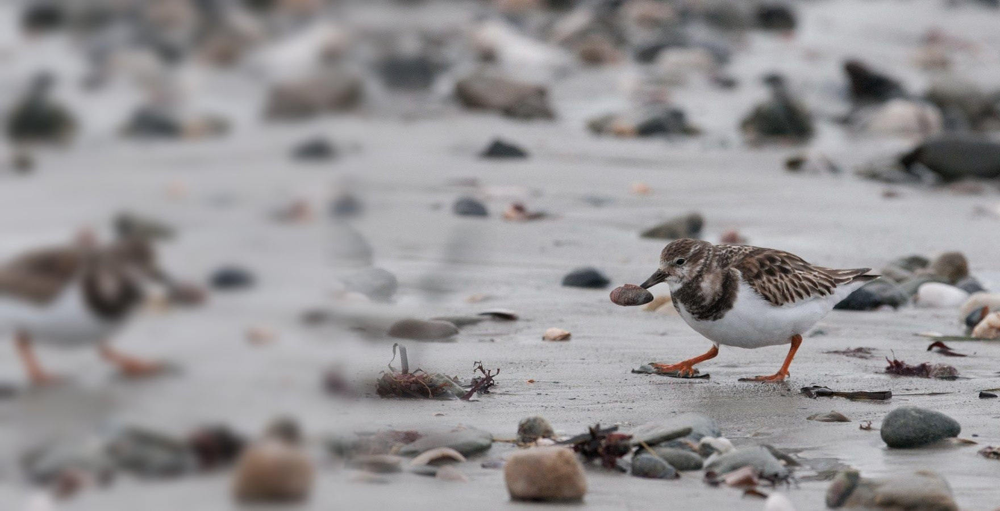
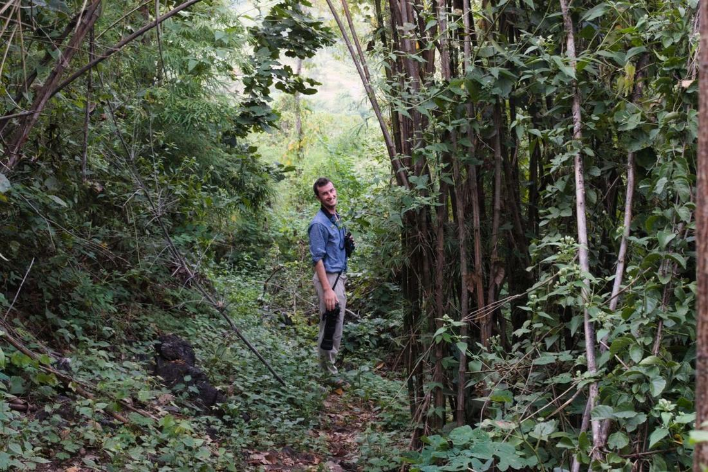
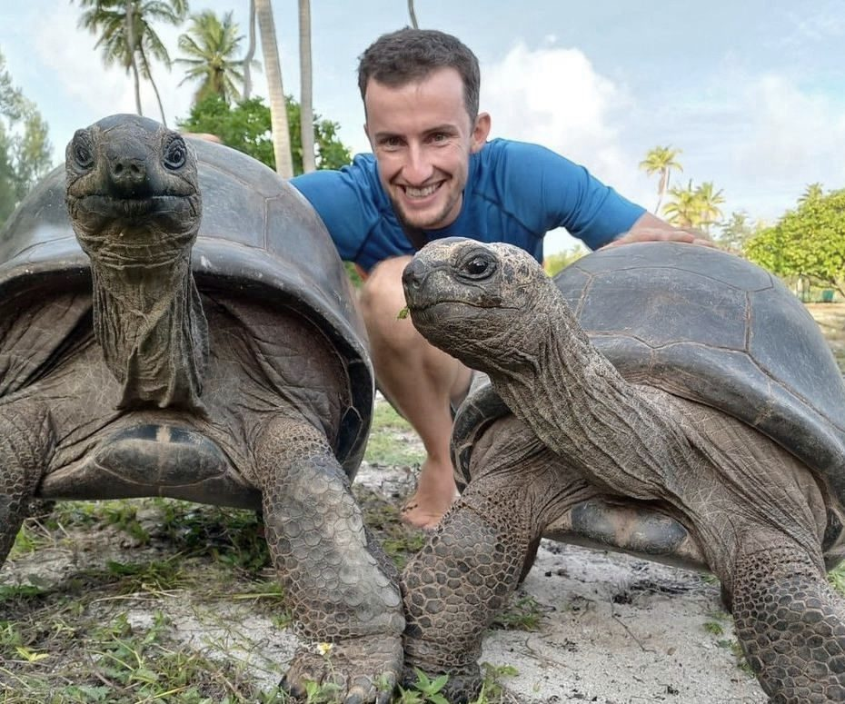
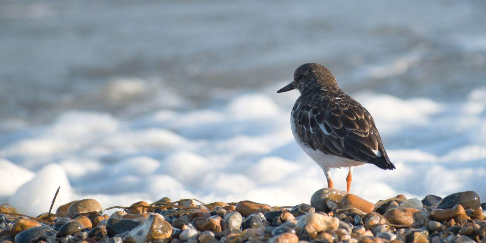

For conservation charities
The support behind the conservation
Frustrated at those tasks you never get round to?
That is where I come in.

Frustrated at those tasks you never get round to?
That is where I come in.
Charities do remarkable work with limited resources. However, this often means that some tasks have to be prioritised over others.
I take on the jobs that keep slipping down the list, giving your charity extra support and insight.
To do
Think of me as an extra pair of hands who already understands conservation and charities. Most of my work falls into three areas.

I am a conservationist who has spent several years at remote field sites, including in the Seychelles and Papua New Guinea, so I know first-hand how much small teams take on and how stretched they can become.
I also serve as treasurer on two charity boards, giving me an understanding of what trustees and funders need to see.

The turnstone, Arenaria interpres, turns over stones to find what is underneath. Interpres is Latin for interpreter.
That is what I do: I turn over your records and reports, find what matters, and explain it clearly.
James took the initiative to analyse historic data from our conservation and monitoring work to investigate trends, and helped update our work plans to address the issues he found. He always made sure our monitoring met highly rigorous scientific standards, and he approached every task in a diplomatic and patient way.
As the Finance Manager, he was responsible for organising project delivery, report writing, accounting and acquittal of TCA’s expenditure… He was unfailingly reliable, thorough and a pleasure to work with.

A free, short call to talk through what you need and how I can help. I work remotely with charities of any size, in the UK and worldwide.
Email meOr email turnstoneinterpres@gmail.com